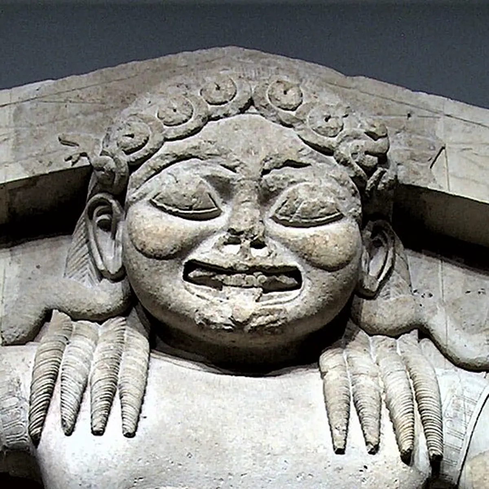
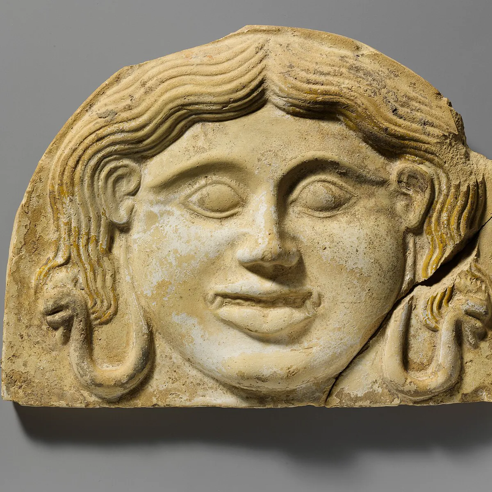
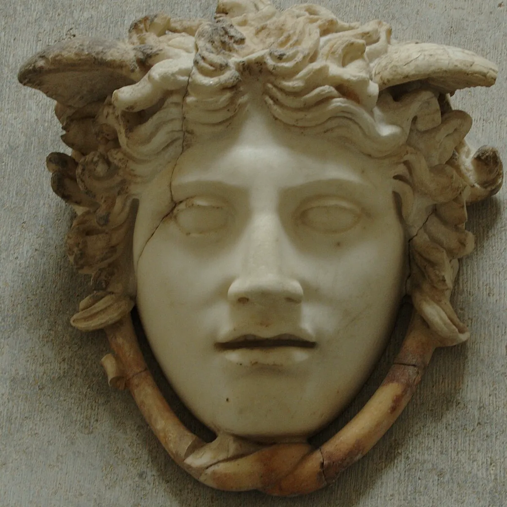
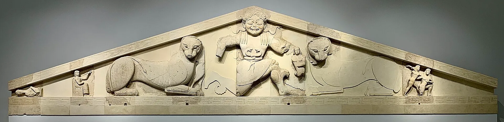
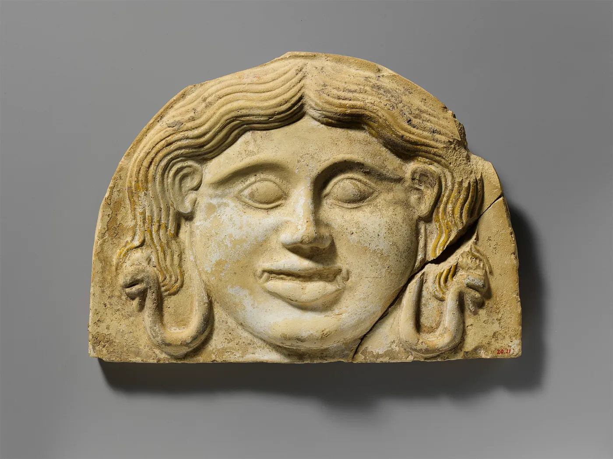
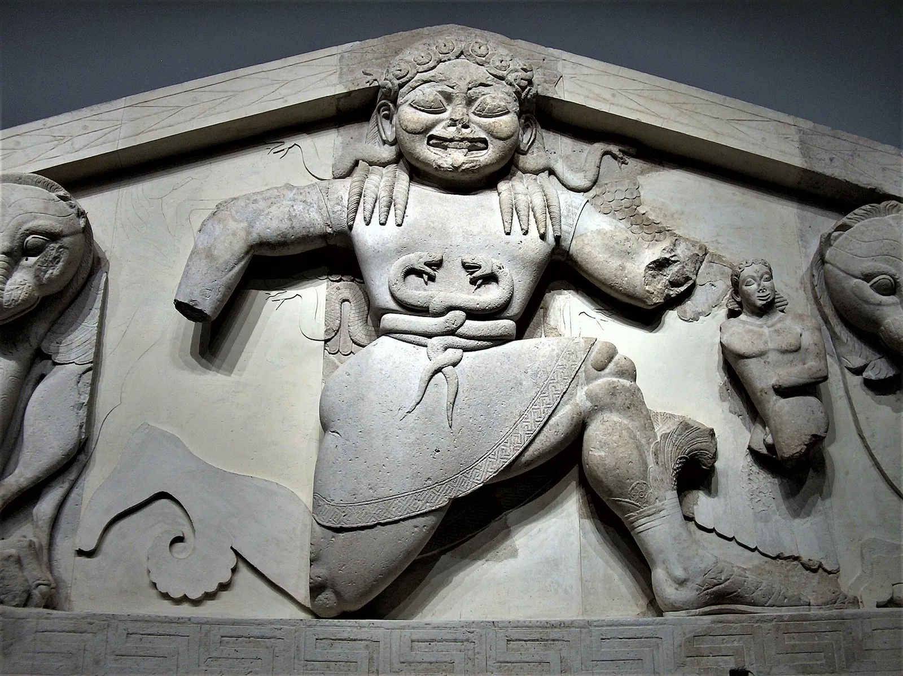

Szene 4 von 9
ΔSchutzzeichen
„… die Gorgo, grässlich anzuschauen, furchtbar blickend, und um sie Schrecken und Flucht.“
Das Schrecklichste schützt vor dem Schrecklichen.
Ein abgeschlagener Kopf mit Schlangenhaar – und die Griechen hängten ihn sich an Schilde, Dächer und Tempel. Dieses Bild des Gorgonenhaupts heißt Gorgoneion. Es galt als apotropäisch: Es sollte Unheil abwehren, indem es selbst Furcht einflößte.
Schon im 6. Jahrhundert v. Chr. saß ein geflügeltes Gorgoneion aus Bronze als Schutzzeichen auf einem Schild.1 Und schon auf den frühesten Darstellungen wendet Perseus den Blick ab: Dass ihr Anblick tötet, gehörte von Anfang an zur Sage.2



Fratze
Archaik · um 590/580 v. Chr.
In der Archaik ist das Gorgonengesicht eine hässliche Fratze – glotzende Augen, gebleckte Zähne. Es soll nicht gefallen, sondern erschrecken.3
Abb. 15Gorgo vom Westgiebel des Artemis-Tempels, Korfu, Archäologisches Museum · Foto: Dr.K., Wikimedia Commons, CC BY-SA 4.0
Übergang
2. Hälfte 5. Jh. v. Chr.
Ein Stirnziegel aus Tarent zeigt eine Medusa zwischen wild und ruhig: noch rund und breit, aber schon mit menschlichen Zügen.4
Abb. 16Stirnziegel mit Medusenkopf, Tarent, Metropolitan Museum, New York · Wikimedia Commons, CC0
Schönheit
Medusa Rondanini · Datierung umstritten
Bis zur Klassik bekommt das Gesicht angenehme menschliche Züge.5 Die Medusa Rondanini gilt als Kopie eines Originals des 5. Jh. v. Chr. – oder als späthellenistische bzw. augusteische Schöpfung. Die Forschung ist sich nicht einig.6
Abb. 17Medusa Rondanini, Marmor, Glyptothek München (Inv. 252) · Wikimedia Commons, gemeinfrei
Wo es auftaucht
Überall, wo Schutz gebraucht wurde
-
Riesig im Giebel, über dem Eingang: die Gorgo von Korfu.

-
Als Stirnziegel am Dachrand wachte sie über jedes Haus.

-
Vom Bronzeschild der Antike bis zu Caravaggio, der Medusa 1597/98 auf einen gewölbten Holzschild malte.7

-
Eine Silbermünze aus Athen um 520 v. Chr. trägt das Gorgoneion.8
-
Ein Mosaik aus Rom, 115–150 n. Chr., heute in der Getty Villa.9
-
2021 wurden Fragmente eines Gorgoneions aus der Gorham’s Cave in Gibraltar veröffentlicht – einem Heiligtum antiker Seefahrer. Es sind die einzigen bekannten Medusa-Funde aus einer Höhle.10

Die Gorgo von Korfu
Der Westgiebel des Artemis-Tempels auf Korfu entstand um 590/580 v. Chr.11 – andere Angaben nennen 585 v. Chr.12 Er ist der älteste erhaltene große Steingiebel Griechenlands.13
In der Mitte läuft Medusa, umgeben von ihren Kindern Pegasus und Chrysaor und flankiert von zwei Raubkatzen.14 Ausgegraben wurde der Giebel unter Beteiligung des deutschen Archäologen Wilhelm Dörpfeld; die New York Times nannte ihn das beste erhaltene Beispiel archaischer Tempelskulptur.15
Kaiser Wilhelm II. verfolgte die Grabungen auf Korfu persönlich und veröffentlichte 1936 eigene Studien zur Gorgo.16